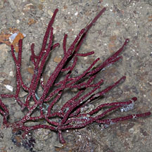
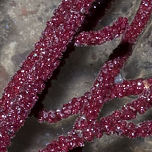
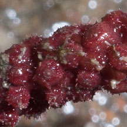
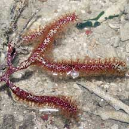
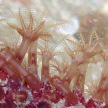
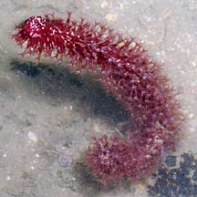
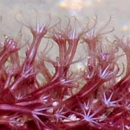
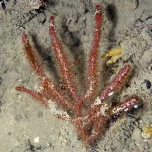
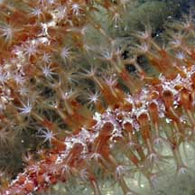

|
|
|
gorgonian
text index | photo
index
|
| Phylum Cnidaria > Class Anthozoa > Subclass Alcyonaria/Octocorallia > Order Gorgonacea |
| Gnarled
sea fan Echinomuricea pulchra* Family Plexauridae updated Dec 2019 Where seen? This rather bumpy and knobbly sea fan is often seen on Beting Bronok and Changi. On coral rubble. Features: 10-15cm long. Colony comprises a few stems branching on one plane. The branches emerge at right angles then curve upwards. Stems are cylindrical with rounded tips. Colours seen include red, maroon, pink and orange. The polyps are rather large, and pinkish or orange with white centres. When the colony is out of water and the polyps are retracted, the stems look bumpy and gnarled. With the polyps extended, the colony looks rather fluffy. Animals seen on the sea fan include Winged oysters and squid egg capsules. |
 Beting Bronok, Jul 08 |
 Stems look gnarled with polyps retracted. |
 Closer look at the stem with polyps retracted. |
|
 Beting Bronok, Aug 05  |
 Changi, Sep 10  |
 Beting Bronok, Jul 03  |
*Species are difficult to positively identify without close examination.
On this website, they are grouped by external features for convenience of display
| Gnarled sea fans on Singapore shores |
On wildsingapore
flickr
|
|
Links
References
|